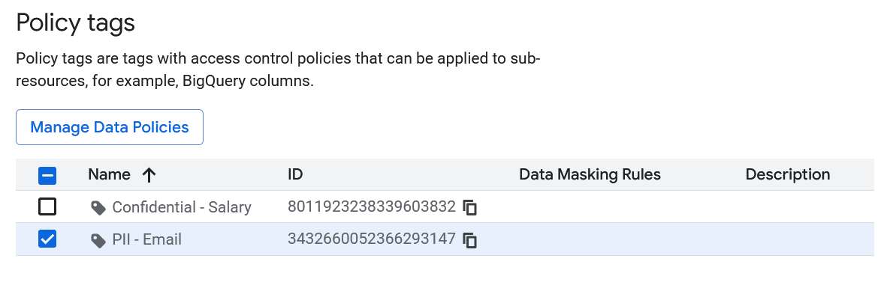
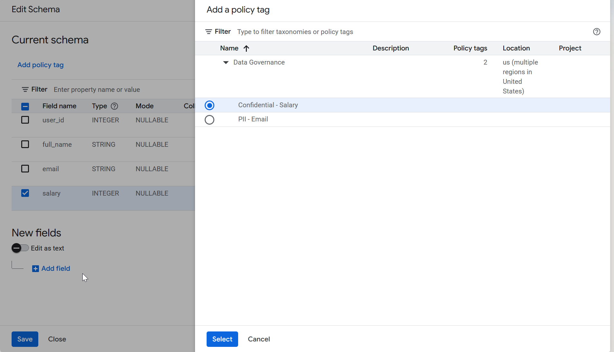
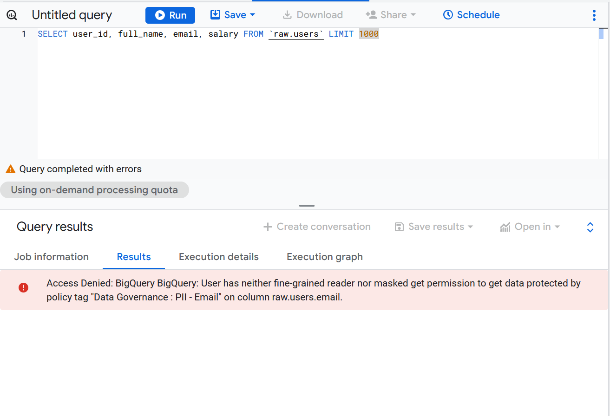
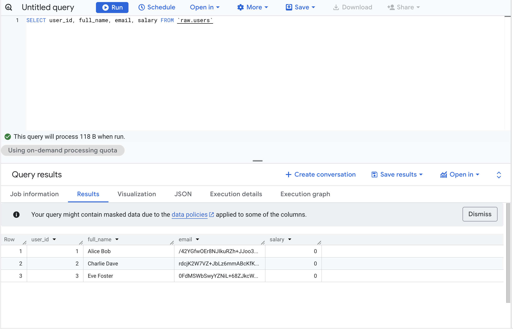
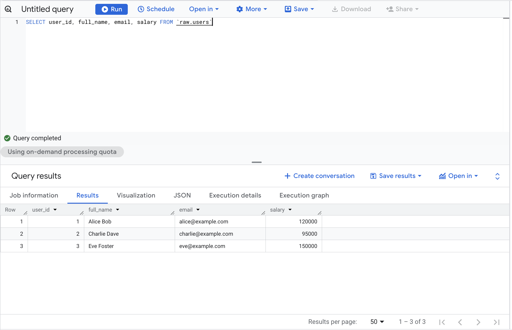

Introduction
As data engineers, we often sit in the uncomfortable middle ground between “Business needs data fast” and “Legal says we can’t share PII.” In the past, this meant creating endless authorized views or duplicating tables with sensitive columns removed — a maintenance and cost nightmare.
BigQuery’s Column-Level Security (CLS) and Dynamic Data Masking features allow us to solve this elegantly. We can keep a single physical table but serve different versions of the data (clear, masked, or nullified) based on the user’s IAM permissions.
In this guide, we’ll implement a robust security policy for a users table containing sensitive email and salary data, then integrate it with dbt and explore monitoring strategies.
The Architecture of BigQuery Security
Before writing code, we need to understand the hierarchy. BigQuery security relies on Dataplex (formerly Data Catalog) taxonomies:
- Taxonomy: A logical group of policy tags (e.g., “PII Data”). Think of it as a security domain.
- Policy Tags: Specific labels within a taxonomy (e.g., “High Sensitivity”, “Medium Sensitivity”).
- Data Policies: Rules attached to tags that define how data is hidden (e.g., “Mask with SHA256”, “Block access”).
The flow is: BigQuery → Policy Tags (in Governance section) → Data Policies Creation → Application to Columns
Scenario: The users Table
We have a simple table in our raw dataset with varying sensitivity levels:
user_id(Public)full_name(Public)email(Sensitive - Needs Masking for analysts but readable for joins)salary(Highly Sensitive - Restricted Access, no masking option)
Let’s create this table with some dummy data:
CREATE OR REPLACE TABLE `my_project.raw.users` AS
SELECT 1 as user_id, 'Alice Bob' as full_name, 'alice@example.com' as email, 120000 as salary
UNION ALL
SELECT 2, 'Charlie Dave', 'charlie@example.com', 95000
UNION ALL
SELECT 3, 'Eve Foster', 'eve@example.com', 150000;Part 1: The Manual Way (For Understanding)
I recommend doing this once manually (console clicks, sometimes called “ClickOps”) to understand the flow, then switching to Terraform for everything that follows.
You may probably have to activate Google Cloud Data Catalog API.
-
Navigate to Policy Tags:
- Option A (Recommended): Go to the BigQuery Console, click on your project in the left sidebar, then click the “Policy tags” tab
- Option B: Go to Dataplex → Govern → Data Products in the GCP Console (we won’t cover this)
-
Create Taxonomy: Click “Create Taxonomy”
- Name:
Data Governance - Region:
usoreu(must match your BigQuery dataset region)
- Name:
-
Create Policy Tags: Within your taxonomy, add two tags:
PII - EmailConfidential - Salary
-
Set Masking Rules:
- Select each time the Policy Tag and click on “Manage Data Policies”
- Click on
PII - Email→ “Create data policy” - Choose masking function: “Hash (SHA256)”
- Click on
Confidential - Salary→ “Create data policy” - Choose masking rule:
Default Masking Value
-
Give
Masked Reader/Fine-Grained Readerroles:
- You can give the
Masked Readerrole when you create the “Masking Rule” in the “Principal” field - You can give the
Fine-Grained Readerrole by selecting a policy tag and in the “Info Panel” adding a “Principal” the followingroles/datacatalog.categoryFineGrainedReaderrole
You should have something like this in the Policy tags page:

- Apply to BigQuery Table:
- Go to BigQuery Console
- Navigate to your table:
my_project.raw.users - Click “Edit schema” (pencil icon)
- For the
emailcolumn: Click on “Add policy tag” → SelectPII - Email - For the
salarycolumn: Add policy tag → SelectConfidential - Salary - Save changes

Now if you don’t have any permission you would see something like this (but you can query the table without the columns you don’t have access to):

With theMasked Reader role you would have access to the masked data:

With the right permission Fine-Grained Reader you would have access to the real data

Please note that even if you’re the Owner of the GCP project you won’t have access to the columns without the dedicated permissions.
Part 2: The “Engineer” Way (Terraform)
Clicking through consoles doesn’t scale. The companion repository for this article provisions the full stack via Terraform:
github.com/p-munhoz/tf-bq-column-masking
tf-bq-column-masking/
├── modules/
│ └── column_security/ # Reusable module: taxonomy + tags + policies + IAM
│ ├── main.tf
│ ├── variables.tf
│ └── outputs.tf
└── environments/
└── dev/ # Wire everything together + BQ dataset + table
├── main.tf
├── variables.tf
├── outputs.tf
└── terraform.tfvars.example
1. Define the Taxonomy and Tags
resource "google_data_catalog_taxonomy" "this" {
provider = google-beta
project = var.project_id
region = var.region
display_name = "Data Governance"
description = "Taxonomy for PII and Confidential data — managed by Terraform"
# Required to actually enforce column-level access control.
# Without this, policy tags exist but do nothing.
activated_policy_types = ["FINE_GRAINED_ACCESS_CONTROL"]
}
resource "google_data_catalog_policy_tag" "pii_email" {
provider = google-beta
taxonomy = google_data_catalog_taxonomy.this.id
display_name = "PII - Email"
description = "Email addresses — SHA256 masked for non-privileged users"
}
resource "google_data_catalog_policy_tag" "confidential_salary" {
provider = google-beta
taxonomy = google_data_catalog_taxonomy.this.id
display_name = "Confidential - Salary"
description = "Salary data — NULL for Masked Readers"
}Key notes:
- The
regionmust match your BigQuery dataset location (eu,us,europe-west1, etc.). Taxonomies are regional and cannot be applied across regions. google-betaprovider is required for these resources.activated_policy_types = ["FINE_GRAINED_ACCESS_CONTROL"]is what actually arms the taxonomy. Without it, policy tags are decorative.
2. Define the Masking Policies
# Email → SHA256 hash (still useful for JOINs and GROUP BY)
resource "google_bigquery_datapolicy_data_policy" "email_masking" {
provider = google-beta
project = var.project_id
location = var.region
data_policy_id = "pii_email_sha256"
policy_tag = google_data_catalog_policy_tag.pii_email.name
data_policy_type = "DATA_MASKING_POLICY"
data_masking_policy {
predefined_expression = "SHA256"
# Other options: DEFAULT_MASKING_VALUE (NULL), EMAIL_MASK,
# LAST_FOUR_CHARS, FIRST_FOUR_CHARS, DATE_YEAR_MASK
}
depends_on = [google_data_catalog_policy_tag.pii_email]
}
# Salary → NULL (no analytical value as a masked figure)
resource "google_bigquery_datapolicy_data_policy" "salary_masking" {
provider = google-beta
project = var.project_id
location = var.region
data_policy_id = "confidential_salary_null"
policy_tag = google_data_catalog_policy_tag.confidential_salary.name
data_policy_type = "DATA_MASKING_POLICY"
data_masking_policy {
predefined_expression = "DEFAULT_MASKING_VALUE"
}
depends_on = [google_data_catalog_policy_tag.confidential_salary]
}3. Grant IAM Roles
The module separates permissions per column, you can give a user masked access to email without giving them any access to salary:
# Masked Readers: see SHA256 hash for email
resource "google_bigquery_datapolicy_data_policy_iam_member" "email_masked_readers" {
for_each = toset(var.email_masked_reader_members)
provider = google-beta
project = var.project_id
location = var.region
data_policy_id = google_bigquery_datapolicy_data_policy.email_masking.data_policy_id
role = "roles/bigquerydatapolicy.maskedReader"
member = each.value
}
# Fine-Grained Readers: see cleartext email
resource "google_data_catalog_policy_tag_iam_member" "email_fine_grained_readers" {
for_each = toset(var.email_fine_grained_reader_members)
provider = google-beta
policy_tag = google_data_catalog_policy_tag.pii_email.id
role = "roles/datacatalog.categoryFineGrainedReader"
member = each.value
}4. Apply Tags to the Table Schema
Policy tags are embedded directly in the Terraform schema definition:
resource "google_bigquery_table" "users" {
dataset_id = google_bigquery_dataset.raw_tf.dataset_id
table_id = "users"
schema = jsonencode([
{ name = "user_id", type = "INTEGER", mode = "REQUIRED" },
{ name = "full_name", type = "STRING", mode = "REQUIRED" },
{
name = "email"
type = "STRING"
mode = "REQUIRED"
policyTags = {
names = [module.column_security.pii_email_policy_tag_id]
}
},
{
name = "salary"
type = "INTEGER"
mode = "REQUIRED"
policyTags = {
names = [module.column_security.confidential_salary_policy_tag_id]
}
}
])
depends_on = [module.column_security]
}5. Deployment
cd environments/dev
cp terraform.tfvars.example terraform.tfvars
# Edit terraform.tfvars with your project ID, region, and user lists
terraform init
terraform plan
terraform applyDue to GCP API propagation delays, you may occasionally need two passes:
terraform apply -target=module.column_security
terraform applyAfter applying, a useful output gives you the exact policy tag IDs ready to paste into any other table schema:
terraform output dbt_schema_yml_snippetPart 3: Managing Access (The IAM Layer)
Three Permission Levels
| Role | Where It’s Granted | What They See |
|---|---|---|
| No role | — | Access Denied on any query that touches a protected column |
Masked Reader (roles/bigquerydatapolicy.maskedReader) | On the data policy | email: SHA256 hash — salary: 0 |
Fine-Grained Reader (roles/datacatalog.categoryFineGrainedReader) | On the policy tag | Cleartext values |
Policy tags restrict access regardless of project ownership. Even a GCP project Owner will receive Access Denied on a protected column unless they are explicitly granted the Fine-Grained Reader role on that policy tag. This surprises most engineers the first time they encounter it, plan for it when onboarding new team members or granting break-glass access.
Data Analyst (Masked View)
Give them BigQuery Data Viewer on the dataset plus Masked Reader on the data policies:
resource "google_bigquery_dataset_iam_member" "analyst_viewer" {
dataset_id = google_bigquery_dataset.raw_tf.dataset_id
role = "roles/bigquery.dataViewer"
member = "user:analyst@company.com"
}What they see:
user_id | full_name | email | salary
--------|--------------|------------------------------------------------------------------|-------
1 | Alice Bob | 3a7bd3e2360a3d29eea436fcfb7e44c735d117c42d1c1835420b6b9942dd4f1b | 0
2 | Charlie Dave | fc5e038d38a57032085441e7fe7010b0f6f5b84e3c0e74e1e7e1e4e7e2e5f3e5 | 0
3 | Eve Foster | 7e8d9f0a1b2c3d4e5f6a7b8c9d0e1f2a3b4c5d6e7f8a9b0c1d2e3f4a5b6c7d8 | 0
They can still query, aggregate, and JOIN, they just can’t read the raw values.
HR Admin (Clear View)
Grant Fine-Grained Reader on both policy tags:
resource "google_data_catalog_policy_tag_iam_member" "hr_email_reader" {
policy_tag = google_data_catalog_policy_tag.pii_email.id
role = "roles/datacatalog.categoryFineGrainedReader"
member = "user:hr-admin@company.com"
}
resource "google_data_catalog_policy_tag_iam_member" "hr_salary_reader" {
policy_tag = google_data_catalog_policy_tag.confidential_salary.id
role = "roles/datacatalog.categoryFineGrainedReader"
member = "user:hr-admin@company.com"
}What they see:
user_id | full_name | email | salary
--------|--------------|---------------------|--------
1 | Alice Bob | alice@example.com | 120000
2 | Charlie Dave | charlie@example.com | 95000
3 | Eve Foster | eve@example.com | 150000
Part 4: Common Gotchas and Edge Cases
1. JOINs on Masked Columns
SHA256 masking is deterministic, the same email always produces the same hash. This means JOINs still work:
-- As analyst@company.com (email is masked with SHA256)
SELECT u.user_id, u.email, o.order_id
FROM `my_project.raw.users` u
JOIN `my_project.raw.orders` o
ON u.email = o.customer_email -- Works if both columns use the same masking rule✅ Works when both sides of the JOIN use the same SHA256 masking policy. ❌ Breaks when one column is masked and the other isn’t, or when they use different masking functions.
2. BI Tool Behaviour
Looker, Tableau, Metabase, and similar tools fully respect column-level security. A few things to know:
- If using a service account, all users of that BI tool share its permissions
- If using OAuth (user-level credentials), each user sees data according to their own IAM roles
- Some tools cache schema metadata - refresh the connection after applying new policy tags
Recommendation: Use a dedicated service account per access tier (one for analysts, one for HR) and grant each the appropriate role.
3. Performance Impact
SHA256 masking is applied during the scan phase and adds negligible overhead (under 2% in our testing on tables up to 100M rows). Costs remain unchanged, you’re still scanning the same bytes.
One pattern to be aware of:
-- Can be slower: mask is applied before the filter
SELECT * FROM users WHERE email = 'alice@example.com'
-- Faster: filter on an unmasked column
SELECT * FROM users WHERE user_id = 14. Region Locking
Taxonomies are regional and must match your BigQuery dataset location exactly. You cannot apply a taxonomy from eu to a dataset in us-central1. Plan your regions before you start.
5. Wildcard Table Queries
Policy tags work with wildcard queries, but all tables in the wildcard must have the tags applied consistently. If users_2024 has the PII - Email tag but users_2023 doesn’t, the query will fail.
6. dbt and Policy Tag Persistence
If you use dbt, be aware that --full-refresh drops and recreates tables, which removes policy tags unless they are explicitly defined in your schema.yml:
models:
- name: users
columns:
- name: email
policy_tags:
- "projects/my_project/locations/eu/taxonomies/123/policyTags/456"
- name: salary
policy_tags:
- "projects/my_project/locations/eu/taxonomies/123/policyTags/789"Use terraform output pii_email_policy_tag_id to get the exact path to paste here.
More information in the official dbt documentation.
Part 5: Audit Logging - Who Accessed Your Masked Data?
Compliance isn’t just about restricting access, it’s about knowing who accessed what and when.
Enable Data Access Audit Logs
resource "google_project_iam_audit_config" "bigquery_audit" {
project = var.project_id
service = "bigquery.googleapis.com"
audit_log_config { log_type = "DATA_READ" }
audit_log_config { log_type = "DATA_WRITE" }
}This is already included in the Terraform repository.
Query Audit Logs
SELECT
timestamp,
protopayload_auditlog.authenticationInfo.principalEmail as user_email,
protopayload_auditlog.resourceName as table_accessed,
protopayload_auditlog.metadataJson as query_metadata
FROM `my_project.my_dataset.cloudaudit_googleapis_com_data_access_*`
WHERE
resource.type = 'bigquery_resource'
AND protopayload_auditlog.methodName = 'jobservice.query'
AND timestamp > TIMESTAMP_SUB(CURRENT_TIMESTAMP(), INTERVAL 7 DAY)
ORDER BY timestamp DESCAlert on Suspicious Access Patterns
Set up a scheduled query that flags anomalies, a user suddenly querying 10x more PII records than usual, salary data accessed outside business hours, or a service account touching tables it normally doesn’t.
WITH user_baseline AS (
SELECT
principalEmail,
AVG(record_count) AS avg_records,
STDDEV(record_count) AS stddev_records
FROM historical_access_logs
GROUP BY principalEmail
),
recent_access AS (
SELECT principalEmail, COUNT(*) AS recent_record_count
FROM todays_access_logs
WHERE table_name LIKE '%users%'
GROUP BY principalEmail
)
SELECT
r.principalEmail,
r.recent_record_count,
b.avg_records,
(r.recent_record_count - b.avg_records) / b.stddev_records AS z_score
FROM recent_access r
JOIN user_baseline b USING (principalEmail)
WHERE (r.recent_record_count - b.avg_records) / b.stddev_records > 3Part 6: Cost & Production Checklist
- ✅ No additional storage costs: you’re storing the same data, not duplicating tables
- ✅ No additional query costs: masking does not change bytes scanned, but if you filter on masked columns it can prevent predicate pushdown optimizations.
- ✅ Audit logging: typically under $10/month for most projects
- ⚠️ Taxonomy limits: free, but capped at 1,000 policy tags per project
The real saving is in simplicity. The old pattern of maintaining users_full, users_anonymized, and users_restricted as separate tables doubles or triples your storage and creates a lineage nightmare. One table with column-level security replaces all of that.
Masking vs. Blocking: A Decision Matrix
| Use Case | SHA256 Masking | NULL Masking | Hard Block (no role) |
|---|---|---|---|
| Email for JOINs/grouping | ✅ | ❌ | ❌ |
| Phone number for distinct counts | ✅ | ❌ | ❌ |
| Salary figures | ❌ | ✅ | ✅ |
| Social Security Numbers | ❌ | ❌ | ✅ |
| Credit card numbers | ❌ | ❌ | ✅ |
| IP addresses for fraud analysis | ✅ | ❌ | ❌ |
Rule of thumb: mask when the column still has analytical value in disguised form (JOINs, counts); return NULL when there’s no legitimate use case for non-privileged users; hard-block only when even a NULL would reveal something (e.g., the presence of a salary record itself is sensitive).
Alternative Masking Strategies
SHA256 and NULL are just two options. BigQuery supports several others:
predefined_expression = "EMAIL_MASK" # f***@example.com
predefined_expression = "LAST_FOUR_CHARS" # ****1234
predefined_expression = "FIRST_FOUR_CHARS" # 1234****
predefined_expression = "DATE_YEAR_MASK" # 1987-01-01 → 1987-00-00For fully custom logic (e.g., mask external emails but not internal ones):
CREATE OR REPLACE FUNCTION `my_project.my_dataset.mask_email`(email STRING) AS (
IF(
ENDS_WITH(email, '@company.com'),
email,
CONCAT(LEFT(email, 2), '***@', SPLIT(email, '@')[OFFSET(1)])
)
);Then reference it in Terraform:
data_masking_policy {
routine = "projects/my_project/datasets/my_dataset/routines/mask_email"
}Real-World Implementation Checklist
Before rolling this out to production:
- Identify which columns contain PII or sensitive data
- Define your taxonomy structure, start with 3–5 tags
- Test masking rules in a dev environment first
- Verify BI tools and downstream pipelines work with masked/NULL values
- Enable audit logging before granting access
- Create runbooks for granting/revoking Fine-Grained Reader access
- If using dbt, add
policy_tagstoschema.ymlfor all sensitive models - Set up alerting for unusual access patterns
- Schedule quarterly reviews of who holds Fine-Grained Reader permissions
Conclusion: Security as Code
By implementing Column-Level Security, we move away from “security by obscurity” or managing hundreds of views. We treat data privacy as a first-class citizen in our infrastructure.
Key takeaways:
- Decouple data from policy. Your table schema defines what the data is; policy tags define who sees it.
- Masking is not all-or-nothing. SHA256 for joinable fields, NULL for financial figures, hard blocks for the most sensitive data — use the right tool for each column.
- Policy tags restrict access regardless of project ownership, unless the user is explicitly granted the appropriate fine-grained role.
- Automate everything. Terraform prevents configuration drift. One manual change in the console can silently expose PII.
- Security without visibility is theater. Audit logs and anomaly detection are as important as the restrictions themselves.
The beauty of this approach is that it scales with your team. Whether you have 10 analysts or 1,000, a single users table with proper column-level security is infinitely more maintainable than a sprawling mess of _masked, _anonymized, and _restricted variants.
Security isn’t a checkbox — it’s a practice. And with BigQuery’s column-level security, we finally have the tools to make that practice both robust and developer-friendly.
Want to dive deeper?